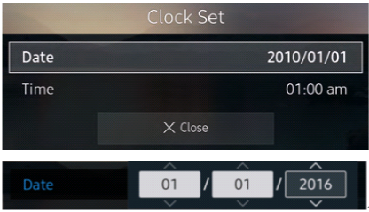
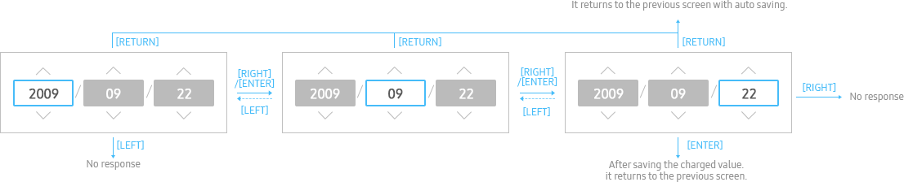
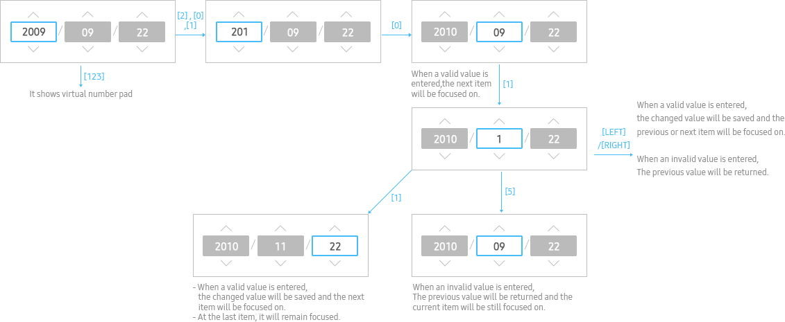
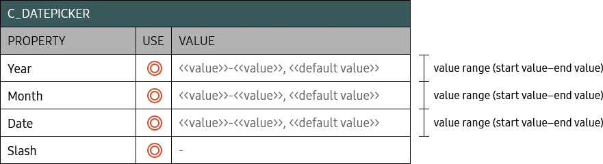

DATE PICKER
C_DATEPICKER
- Definition
- Use date picker to set a date with changing values continuously.
- Usage
-
Display main text of setting value on the same line. (**Refer to C_FUNCTIONTILE for details)
- 
- Interaction
-
- Left/Right
- 
- Enter numbers
- 
- Specs
-
- Properties
-
Date picker consists of Year, Month and Date.
The order of Year, Month and Date follows the standard date format used in each respective country.
Use the slash mark (/) between spin controls- Date picker consists of the following elements:
-
- 1. Year spin control (Mandatory)
- 2. Month spin control (Mandatory)
- 3. Date spin control (Mandatory)
- 4. Slash (Mandatory)
- Property Table
- 
- Visual
-

- Motion
-
- *Tags :
- Spin Control, Text Item, Time Picker